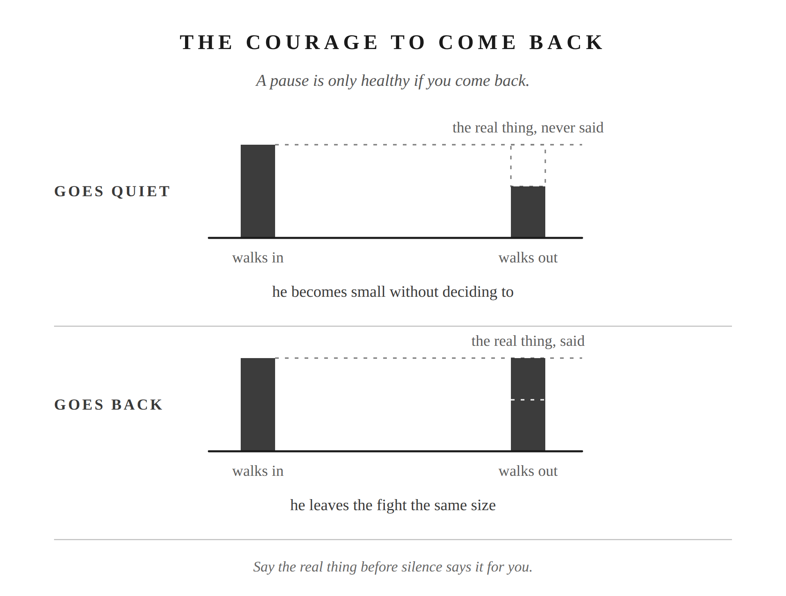

Part I has been about the gap. The three seconds between what happens and what you do. This chapter is about what happens when you’re already inside a real fight, where everything you’ve built gets used at once and the only question left is what kind of man you are at the end of it.
She’s low, or you are. The temperature in the room shifts before the first word gets said. You feel it the way you feel weather. Then something gets said. Maybe it’s small. Maybe it touches something already tender. The gap opens.
If you’re not governing it, the Four D’s are already running before you’ve decided to run them. You go on the defense. You deny what she’s said. You downplay: I did pretty well there, why are you making this bigger than it needs to be? Then you deflect, pointing out something she hasn’t done. Her original concern gets buried under a counter-prosecution. Neither of you wins. Both of you are slightly smaller than when you started.
That is the arc. You’ve run it before. So has she.
This is the last chapter of Part I because it’s where all five chapters apply at once. The mood that infected your inner weather before anything happened. The gap that opened when the trigger hit. The Four D’s that fired automatically. The anger underneath all of it. Now: what you do with the rest.
The Four D’s don’t fire hardest for generic criticism. They fire hardest for the ones that hit something already there.
Think about the word she uses that lands harder than its content warrants. The one that touches something you’ve been carrying quietly. You’re not objectively what she said. You know that. But the accusation lands on something specific: a place where you don’t feel seen for what you actually do, where the judgment feels like it’s missing the full picture. That’s why it hits.
You know this in your body before you know it in your head. Defense. Deny. Downplay. Deflect. Her original complaint gets prosecuted from the other direction. Now you’re both defending. The thing that needed to be said is gone.
An apology may end the fight. The hurt that set it off still needs a conversation.
The reaction out of proportion to the incident is always telling you where the wound is. Not what she did wrong. What’s already tender in you. That’s worth sitting with.
The Four D’s are one version. There are others.
The withdrawal that punishes without naming itself. You go quiet in a specific way she can feel. Not because you’re cooling down, but because you want her to know. Two days of distance between you that neither of you names. The sulk has no stated charge. She has to navigate it alone.
The winning of the argument while losing the relationship. You’re right. She’s wrong. The point is scored. The marriage is slightly colder.
None of this was decided. It was absorbed, the same way the rest of the blueprint was. The question the chapter title asks: are you leaving the fight the same size you were when it started?
Most fights are small.
Marcus put a name on the practice: the view from above. “Look down from above on the countless herds of men and their countless solemnities, and the infinitely varied voyagings in storms and calms, and the differences among those who are born, who live together, and die.” (Meditations 9.30, Long trans.)
The same movement in a fight: zoom out until the thing is at its actual scale. You are fighting about what time to get up in the morning, not world peace. You are fighting about a messy room, a tone of voice, something that didn’t get done. From altitude, most of what feels urgent in the moment becomes almost nothing.
The couples who stay married for fifty years didn’t avoid fighting. They learned, over thousands of small fights, that most of them didn’t need a verdict. The fight about the dishes. The cold drive home. The two-day silence after something someone said on a Thursday. You can’t remember most of it. It didn’t need to be resolved. It needed grace and a little time.
That’s one outcome. You let it go. The decision is genuine, not a suppression: it belongs in the category of things that don’t require a ruling. Let it be small. It is small.
But some things won’t shrink from altitude. When you zoom out and the thing is still big, that’s the signal. Four places a fight ends up: you let it go; you fight hard, both take damage, and then time passes and you call it resolved without the real conversation; you fight hard, both take damage, and someone has the courage to come back; or you communicate, either in the moment or after you’ve cooled. Most couples never return to it later. That’s how the unresolved hurts accumulate.
The Stoics called it parrhesia: frank speech. Seneca’s version of it, from a letter to his friend Lucilius: “I prefer that my letters should be just what my conversation would be if you and I were sitting in one another’s company or taking walks together,—spontaneous and easy; for my letters have nothing strained or artificial about them.” (Epistulae Morales, Letter 75, Gummere trans.) He was writing about letters. The principle is the same in a fight. Not arranged for effect. The true thing, said directly, without managing what comes back.
When the Stoic husband comes back to the unresolved conversation, he waits until things are calm. He asks if they can talk. He says what is true for him, not as a prosecution, but because he doesn’t want to be the man who stores things instead of saying them. Because the environment two people create when nothing ever gets addressed leaks into everything else in the house. The kids feel it too.
He says the true thing. Then he lets it land however it lands.
Her response is hers. Whether she hears it the way he meant it, whether it produces the conversation he hoped for: all of that is a preferred indifferent. He doesn’t govern her response. He governs his engagement.
Not everything resolves logically. She may tell you this directly, and she’ll be right. The Stoic husband has a framework built on reason. Marriage doesn’t operate purely in reason. She lives in a register he doesn’t always have full access to. Some misalignments won’t resolve cleanly. Some conversations will need to be had more than once.
The courage to communicate includes the courage to leave something unresolved and come back to it again. Not because you need the win. Because you’re committed to the conversation regardless of how long it takes.
Part I asked whether you can keep flowing when the rocks hit. Part II asks whether you can carry the weight over time. Steadily, without resentment, without disappearing. Everything you’ve built here is what makes it possible.

Putting into Practice
Mechanism: The courage to come back
Conversation sentence: The fight ends before the real thing gets said. That’s not resolution. That’s how a man becomes small without deciding to.
The default is to call a fight over before the real conversation happens: the Four D’s fire, the original concern gets buried, time passes, and both people call it resolved. Parrhesia, frank speech, is the Stoic practice of coming back to the unresolved thing, saying what’s true without managing the outcome, and releasing her response as a preferred indifferent.
Lesson: Parrhesia: the Stoic discipline of speaking plainly, without dressing it up or managing how it lands. Whether she receives it the way you hoped is a preferred indifferent: something to want, not something you get to control.
Challenge: Calling a fight “over” once it goes quiet, without the real thing ever actually getting said, isn’t resolution. It’s deferred conflict, with interest.